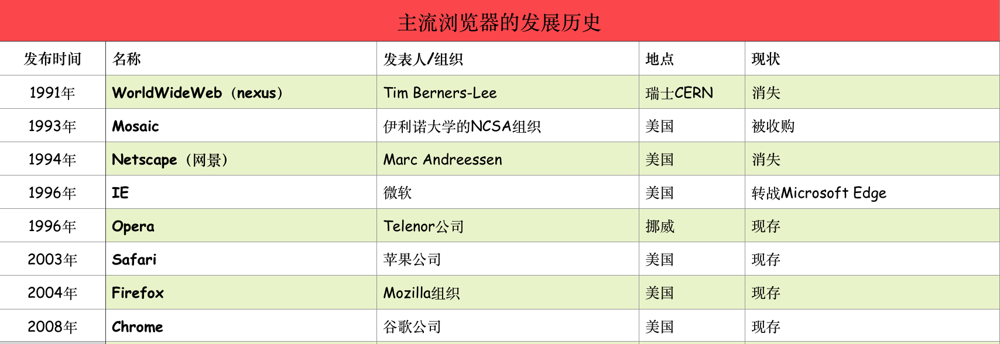
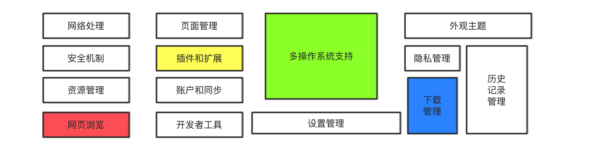
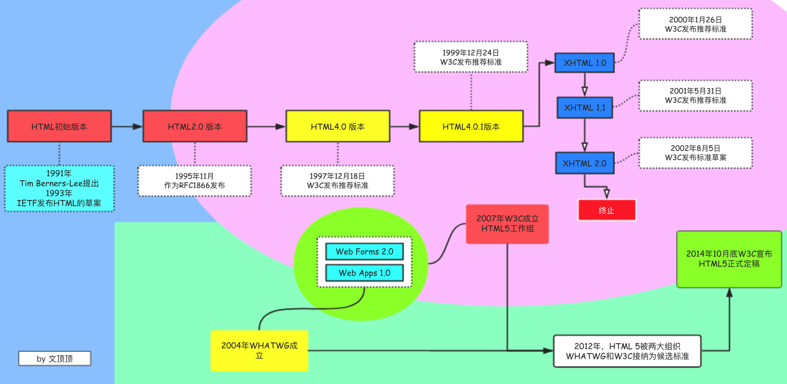
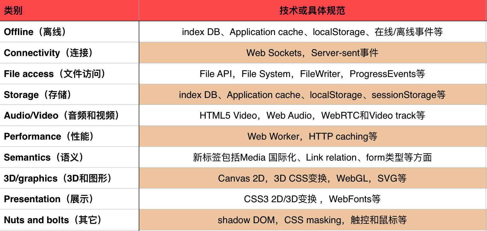
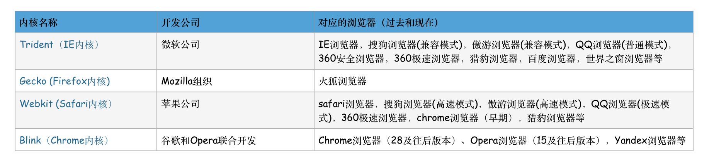
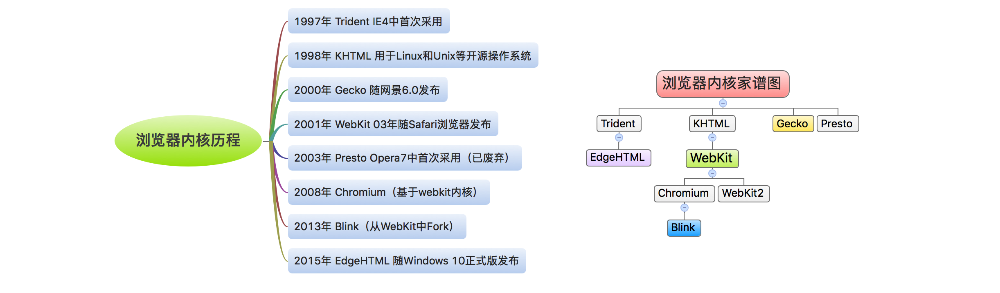
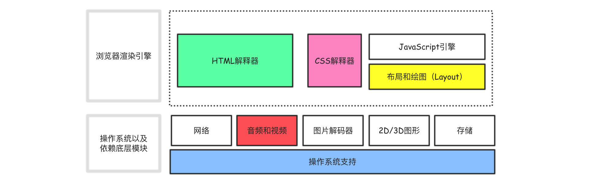

网络编程系列 浏览器、HTML和内核(引擎)
1.0 浏览器的发展和特性
浏览器的发展
浏览器的历史并不长，即便到今天来算也只有短短的27年，下面列出浏览器历史中的重要节点。
Tim Berners-Lee 在80年代末期90年代初期发明了世界上第一个浏览器**WorldWideWeb(后改名Nexus)**，并于1991年公布了源代码。该浏览器支持早期的HTML编辑语言，功能和实现简单但已经能够做到可视化网页内容，于1997年1月7日正式终止开发和支持。
1993年Marc Andreessen领导的团队开发了真正有影响力的Mosaic浏览器，这就是**Netscape（网景）浏览器**的前身，此时的网景浏览器虽然既没有JavaScript也没有CSS，只能简单的显示静态的HTML元素，但这不影响它在世界范围内取得巨大的成功。
1995年，受 Mosaic的深刻影响，微软推出了著名的**Internet Explorer（IE浏览器）**，IE根植于自家的操作系统，逐渐了取代网景的地位，随着网景浏览器的消亡，第一次浏览器大战(微软和网景)宣告结束。
1995年，Jon和Geir组建了OperaSoftwareASA公司(挪威)，1996年首次公开发布了**Opera浏览器**。
1998年，末路的网景公司成立了Mozilla基金会，并主导开发了开源的**火狐浏览器(后更名为Firefox)**，并于2004年发布1.0版本。因火狐浏览器功能丰富、扩展众多，其市场份额也逐年攀升。
2003年，苹果发布了**Safari浏览器，并于2005年开源了Safari的内核Webkit**，加入了第二次浏览器大战（微软-苹果-Mozilla）。
2008年，谷歌公司以苹果开源的WebKit作为内核，创建了Chromium项目，目标是创建一个快速的、拥有多操作系统(包括桌面和移动端)支持的浏览器。在Chromium的基础上，谷歌发布了自己的浏览器产品Chrome。

Safari和Chromium使用的都是苹果公司开源的Webkit内核，需要注意的是Chromium本身就是浏览器而不是内核，Chrome浏览器一般选择Chromium的稳定版本作为它的基础来实现。
桌面系统中：微软的IE和Mozilla的火狐以及谷歌的Chrome成为三足鼎立之势，它们几乎占据了90%的浏览器市场份额。
移动系统中：因苹果iOS操作系统和谷歌安卓系统在移动端中的统治地位，移动系统中的浏览器主要是Chrome和Safari二人转。
浏览器的特性

上图列出了现代浏览器的主要特性，包括网络处理、页面浏览以及多操作系统支持等功能，下面就一些重要的特性做简要说明。
**资源管理**主要处理各种资源（下载的图片、视频等文件），包括缓存处理、重复下载检查等内容。
**开发工具**该部分主要面向开发者，主要提供页面HTML元素审查、JavaScript代码调试等内容。
插件扩展 插件和扩展机制是现代浏览器的重要特征，主流浏览器均支持各种形式的插件和功能扩展。
**账户同步**主要用来同步用户的历史记录、书签等重要信息，为用户提供了多系统下的统一体验。
网络处理 这是浏览器的核心功能，浏览器的账户同步、网页浏览等功能均需要不同程度的依赖于网络模块的处理。
安全机制 该部分旨在提供安全的浏览器环境，包括但不限于显示用户访问网站是否安全、设置网站的安全级别、浏览器证书处理等内容。
**网页浏览**这是浏览器最重要、最核心也最基本的功能，它通过调用网络模块下载互联网上的资源（网页）并通过资源管理器来获取资源并把它们转化为可视化的内容呈现给用户。
浏览器的主要组件(结构)
我们已经简单介绍了浏览器的特性（主要功能），其实作为浏览器来说它最核心的功能是通过向服务器发送请求并在得到响应后在浏览器窗口上显示对应的Web资源，而浏览器解释和显示web资源的方式由HTML和CSS规范指定。
上图展示了浏览器的主要组件，下面简单说明。
用户界面 包括地址栏，后退/前进按钮，书签菜单等部分。渲染引擎 负责显示网络请求得到的内容。网络模块 用于网络请求等处里，与具体的平台无关。UI后端 用于绘制组合框和窗口等基本UI部件。
**数据存储**用于存储和处理浏览器使用中的必要数据。浏览器引擎 浏览器最核心的部分。
**JavaScript解释器**用于解析和执行JavaScript代码。
2.0 HTML的发展和特性
HTML的发展
HTML（HpperText Markup Language）超文本标记语言，用于网页的创建和显示。现已经发展为HTML5，下面列出HTML发展过程中的关键节点。
1991年，**Tim Berners-Lee**编写了一份叫做“HTML标签”的文档，里面包含了大约20个用来标记网页的HTML标签，里面直接借用了SGML的标记格式，用于在浏览器中表示文字等信息。
1993年6月作为IETF（互联网工程工作小组）发布了HTML的草案（并非标准）。后来，W3C组织,全称World Wide Web Consortium万维网联盟取代IETF的角色，成为HTML的标准组织。
1997年12月18日，W3C发布**HTML 4.0**推荐标准。
1999年12月24日，W3C发布**HTML4.0.1**推荐标准。
HTML 4.0.1发布后，HTML到达了一个拐点，这之后很长时间里HTML的发展走向了另外的方向。
2000年1月26日，W3C发布了**XHTML1.0**，这是在HTML 4.01之后的第一个修订版本，其中X代表“EXtensible”，扩展的意思。新的标准并没有引入任何新标签或属性，而是要求使用XML般的严格语法，被称为XML风格的HTML。
XHTML1.0的推出刚好碰上了CSS的崛起，Web开发设计者们开始意识到Web标准问题，基于XHTML的严格语法规范被视为编写 HTML代码的最佳实践。
2001年5月31日，W3C发布了**XHTML1.1。如果说XHTML 1.0是XML风格的HTML，那么XHTML 1.1则是货真价实的XML。这意味着XHTML 1.1无法使用 text/html MIMEType直接输出，而如果Web开发者使用XML MIMEType**，则当时的主流浏览器压根不支持。看上去，W3C似乎正在与当时的Web脱节。
2002年8月5日，W3C发布了**XHTML 2.0**工作草案，XHTML 2不向前兼容，甚至不兼容之前的HTML，它是一种全新的语言。现在来看这实在是一场灾难，这是吃力不讨好的无用功。
W3C闭门造车的作风导致Opera，苹果以及Mozilla的代表们开始发出反对声音。2004年，Opera的 Ian Hickson提议在HTML基础上进行扩展以适应新的Web应用，该提议遭到W3C的拒绝。于是，他们自发组织成立了超文本应用技术工作组(Web Hypertext Application Technology Working Group)WHATWG。WHATWG和W3C组织开始在HTML发展的这条路上走向了不同的方向。
WHATWG组织的主要工作包括两部分，**Web Forms 2.0和Web Apps 1.0**，它们都是HTML的扩展，后来合并到一起成为现在的HTML 5规范。
在WHATWG致力于HTML5的同时，W3C继续他们的XHTML 2.0，然而，他们慢慢地陷入困境。2006年10月，**Tim Berners-Lee**发表了一篇博客文章，表示从HTML走向XML的路是行不通的，几个月后（2007年）W3C组建了一个新的HTML工作组，他们非常明智地选择了WHATWG的成果作为基础来立项HTML 5。也就是说，W3C同时在进行着两套规范，XHTML 2.0 和HTML 5，而WHATWG也在进行着HTML5规范的工作。
2012年，HTML 5被两大组织WHATWG和W3C接纳为候选标准。好在经过长达八年的扯皮和博弈之后，2014年10月底W3C宣布HTML5正式定稿。
纵观HTML5的发展史，有用户的需求在推动，有技术开发者的需求在推动，更有巨大的商业利益在推动，关于HTML5发展史中的博弈可以参考html5的发展历程和由此引起的政治斗争。下面给出HTML发展的主要节点图示。
HTML5的特性
HTML5包含了一系列的标准，其构建思想和前瞻性意义深远。更重要的是，HTML5不仅仅可以用来构建内容更丰富的网页，更对作为平台来开发提供了能力支持。当前，所能在W3C官网找到的HTML5最新版本为2018年4月26日发布的HTML 5.3工作草案,也可以在W3C组织github发布页查看详情。
HTML5标准大概可以分为10个类别，它们分别是Offline（离线）、Storage（存储）、Connectivity（连接）、File access（文件访问）、audio/video（音频和视频）、3D/graphics（3D和图形）、presentation（展示）、performance（性能）、semantics（语义）和Nuts and bolts（其它）。其中每个类别都由众多的技术和规范组成。
更对关于HTML5规范的说明可以参考W3C官网或者W3C中国或者HTML5标准阅读技术博客
单独说说HTML5
现在我们都知道2007年的时候，W3C开始从WHATWG接手相关工作，重新开始发展HTML5。W3C为什么突然决定重新发展HTML5，推动新标准呢？我们可以试着从三个方面来试着分析。
用户需求的推动
在2005年左右的时候，互联网的发展进入到新的时期。随着宽带的普及和电脑硬件的发展和性能增强，消费者不单单通过互联网来浏览网页、收发邮件，流媒体和网页游戏开始进入到用户的视野。
对于这块需求，由于当时的HTML标准并没有把握住互联网产业的变化及时演进，相关的浏览器产品也没有升级，因此这块新需求就自然被浏览器插件满足了，那就是Flash。这个部署在亿万浏览器里的商业插件俨然成为了事实标准。
技术需求和商业利益的推动
2005年Adobe花费34亿美元巨资收购Macromedia，把Flash收归旗下，紧接着大幅推广FLV流媒体。
除Flash这个商业产品成为了事实标准外，W3C当时还面临着另外的尴尬，那就是私有扩展协议的制造者IE。IE当时在桌面浏览器占有垄断地位，并且扩展了大量的IE 私有语法，开发者完全不知道这些语言是谁定义的。基于上面的事实，当时的情况是整个web世界，都被微软和Adobe这两家公司捆绑了。于是以苹果和谷歌为代表的很多IT巨头开始行动起来，既然大家都是W3C的主席单位，好吧，那我们就重新开始做HTML5吧。
HTML5其实就是这么诞生的，所以2007年，其实也是IE和Flash由盛转衰的转折点。HTML5的发展大体经历了Web增强和移动互联网两个阶段，而现今我们看到的是属于HTML5的春天。需要注意的是虽然HTML5意义深远，但目前来说并非所有浏览器都对HTML5提供100%的支持，我们可以通过HTML5TEST网站来查看各浏览器对HTML5特性的支持情况。
3.0 浏览器内核（渲染引擎）
浏览器内核简单介绍
浏览器内核作为浏览器中最重要的模块，其核心作用是将页面转换为可视化的结果。浏览器内核一般分成渲染引擎(layout engineer 或者 Rendering Engine)和JS 引擎两部分，只是通常我们总是把渲染引擎称之为内核，习惯把JS引擎区分开来单独说明。
**渲染**指的是根据描述或定义构建模型，通过模型生成可视化图像的过程。
**渲染引擎**指的是浏览器中能够将HTML/CSS文本及其相关的资源文件转换为图像结果的模块。
目前，主流浏览器的渲染引擎主要有Trident（IE内核）、Gecko (Firefox内核)、Webkit (Safari内核）、Blink（Chrome内核）等，其中Blink其实是从WebKit的分支Fork出来的，下表列出了部分浏览器和内核的对应关系。
关于浏览器内核演进和发展的历史比较复杂，这里给出主流内核的发布时间节点和家谱关系图。
浏览器和内核相关的更多信息，请参考浏览迷官网或者WebKit的前世今生或者从KHTML到WebKit，再到Blink或者主流浏览器内核介绍。
渲染引擎的工作流程和主要特征
浏览器内核渲染引擎工作的主要流程如下图所示：

渲染引擎工作流程说明
① 解析HTML并构造DOM树（Parsing HTML to Construct the DOM tree）
② 构造渲染树（Render Tree construction）
③ 布局渲染树（layout of the render tree）
④ 绘制渲染树（Painting the render tree）
渲染引擎的特征
如果按照具体的功能处理来划分，那么渲染引擎主要包括HTML解释器、CSS解释器、JavaScript引擎以及布局和绘图等模块，以及这些模块和基础模块(渲染引擎需要依赖的如网络、存储、音频|视频等底层模块)调用相关的部分。下面给出渲染引擎的构成模块已经依赖的底层模块关系图。
HTML解释器 用于解释HTML的文本，主要用于将HTML文本解释成DOM树，DOM（文档对象模型）是一种用来表示文档的树状结构。
**CSS解释器**级联样式表的解释器用于为DOM树中的各元素对象(Node)计算出样式信息，为网页的最终布局做好准备工作。
**JavaScript引擎**JavaScript脚本语言把网页带到了全新的世界，JavaScript引擎能够解释JavaScript代码并通过DOM接口和CSSOM接口来修改网页的内容和样式信息，从而影响渲染结果。
**布局和绘图(Layout)**在DOM创建后，需要把页面中的元素对象和样式信息结合在一起并计算出大小、位置等布局信息。根据这些信息先构成用于表示页面的内部表示模型（渲染模型），然后调用图形库来绘制所有的节点并最终得到我们看到的网页视图（图片）。